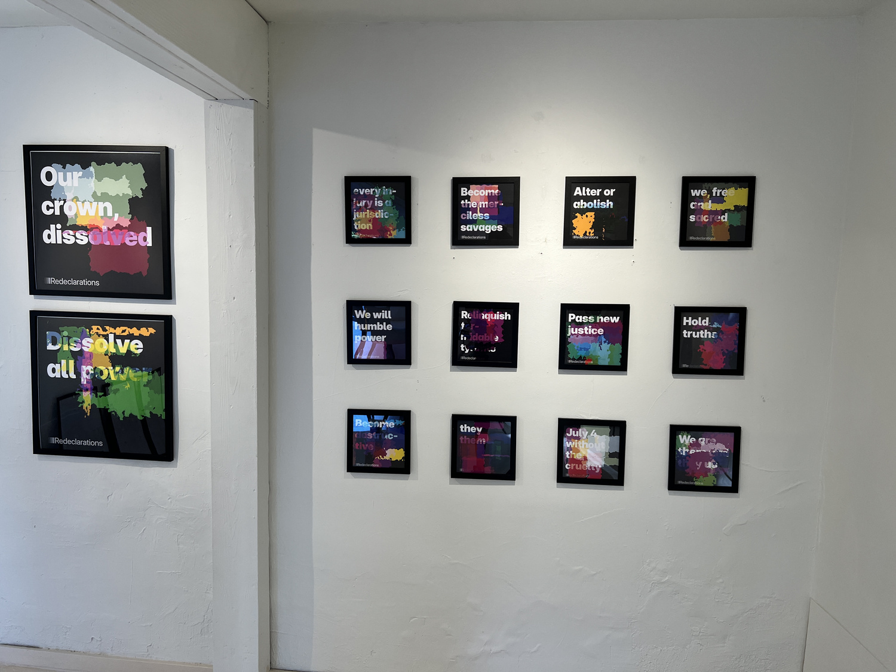
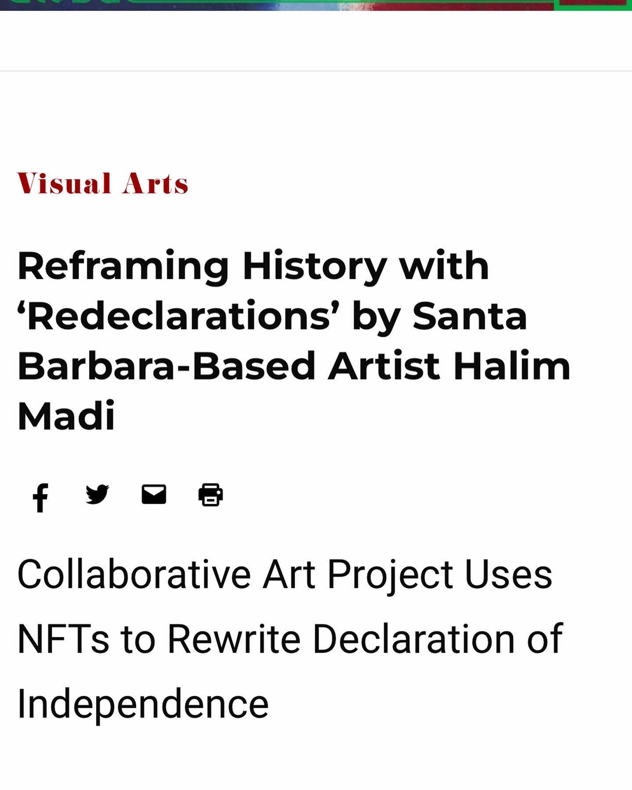
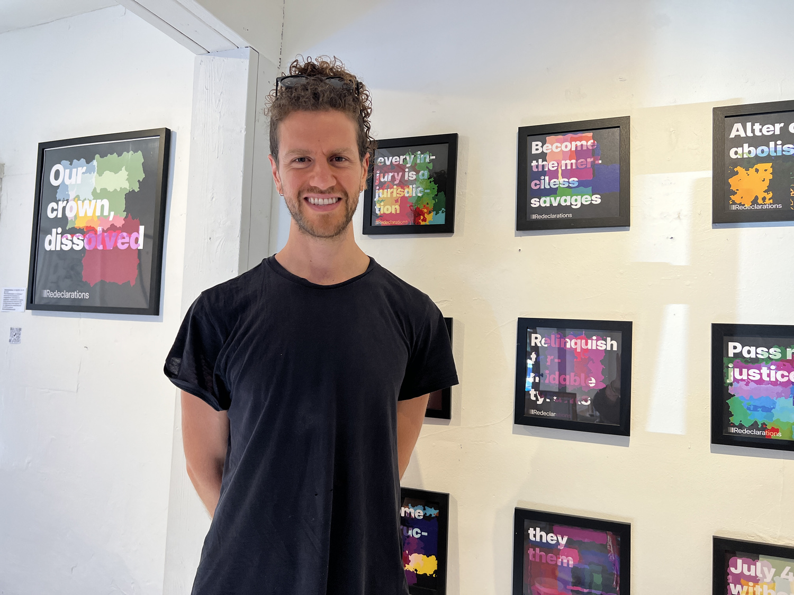
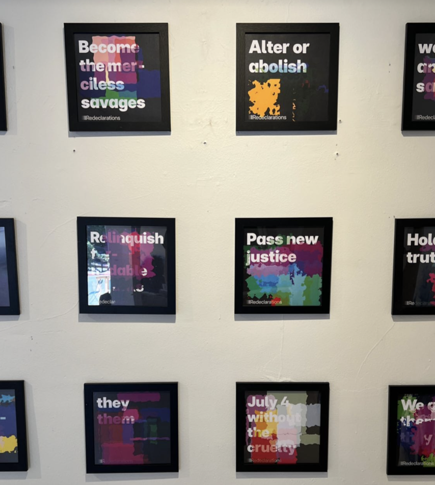
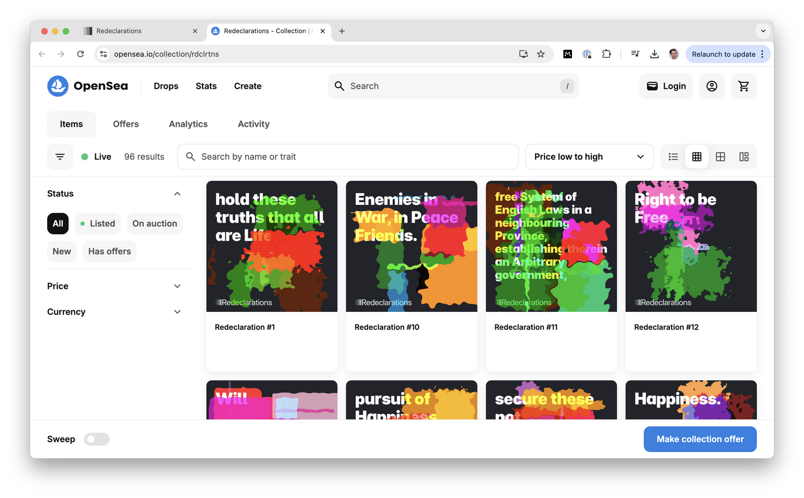
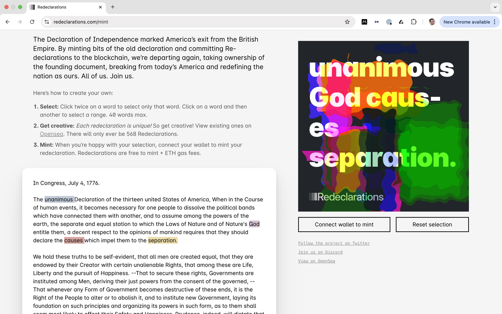

Re/declarations

Re/declarations began as a poetic rebellion: a refusal to accept the U.S. origin story as closed. Developed in collaboration with The Verse Verse, Chase McCoy, and Evan Stites-Clayton, it uses computational poetry, collective authorship, and creative erasure to reclaim the Declaration of Independence, line by line, color by color, signature by signature.
Only 56 men signed the original Declaration. Eight were immigrants. None were Indigenous. None were Black. None were queer. None were women. Re/declarations invites those absent voices to finally sign, speak, and be heard. Visitors remix the original text using an interactive interface and mint their new declarations on-chain as free NFTs. Each declaration becomes both a statement of personal values and a fragment of a larger communitarian revision.

The project launched online ahead of the 4th of July and grew through community calls, social outreach, and exhibitions. A collection of 20 physical works titled Declarations: A Prelude to Independence was showcased at Silo Gallery in Santa Barbara, where the larger pieces were acquired by local collectors.




The entire project is equal parts poetic dissent and speculative governance: a playful but serious invitation to rehearse new forms of belonging. Re/declarations is an ongoing archive of future nations, a refusal to let the past fix the future. The revolution, after all, was never meant to be a single event.